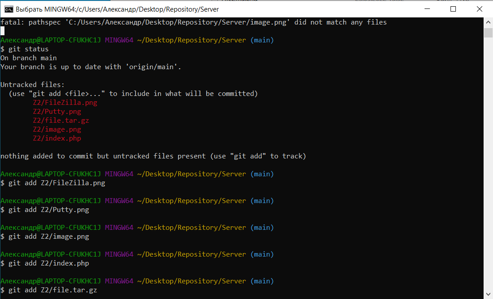
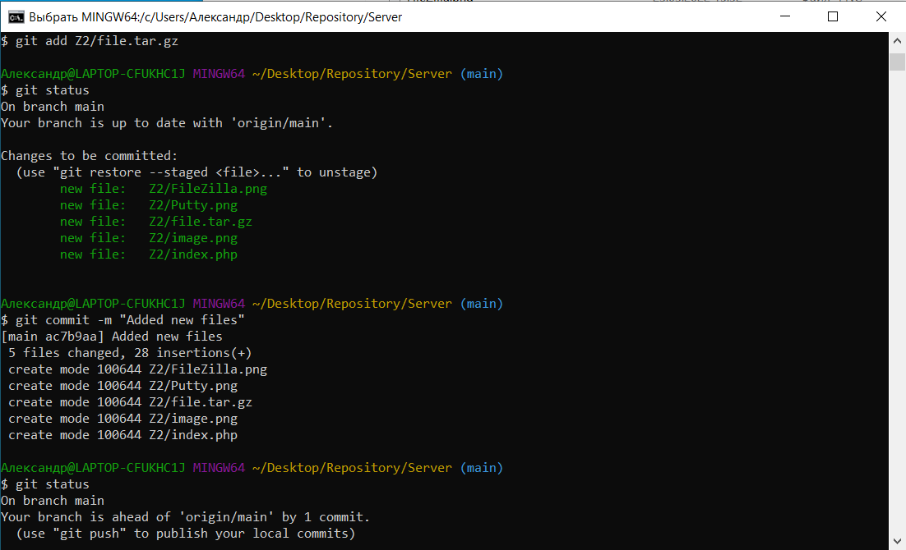
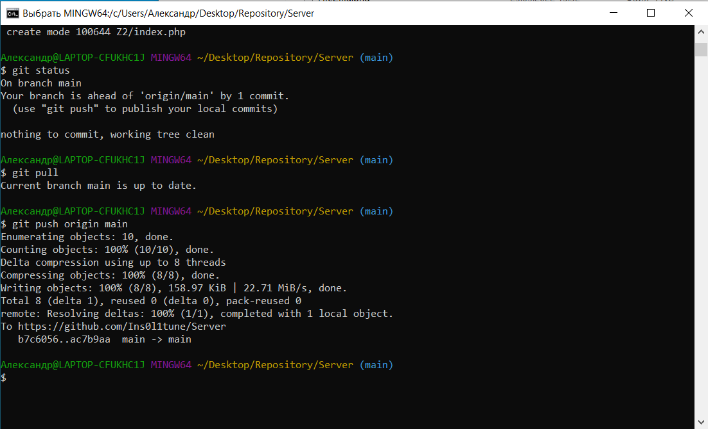
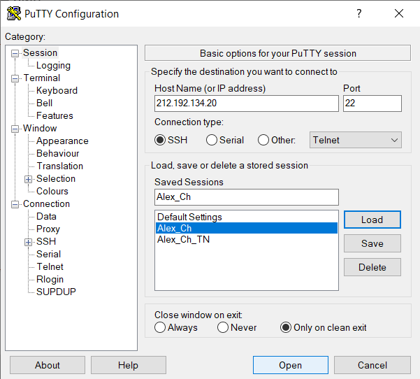
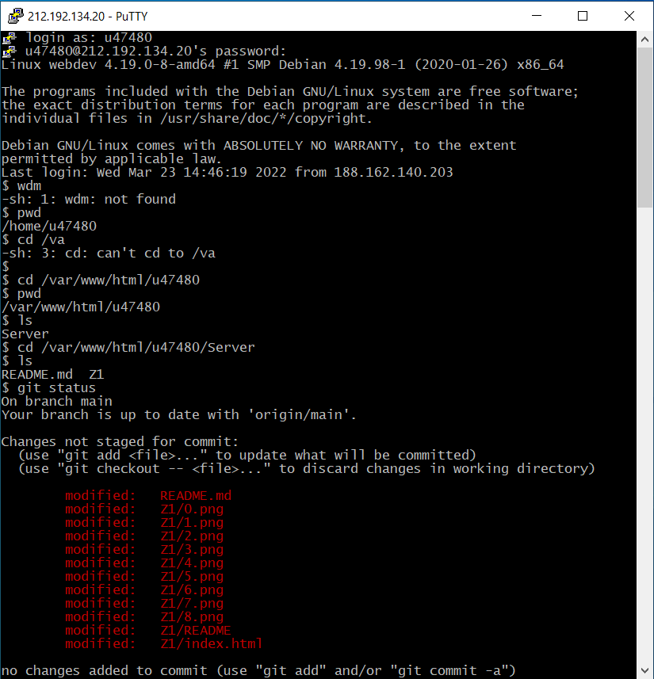
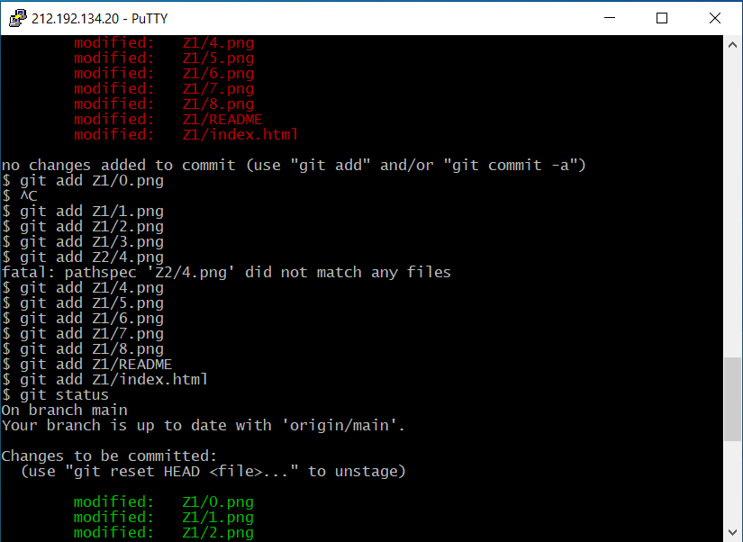
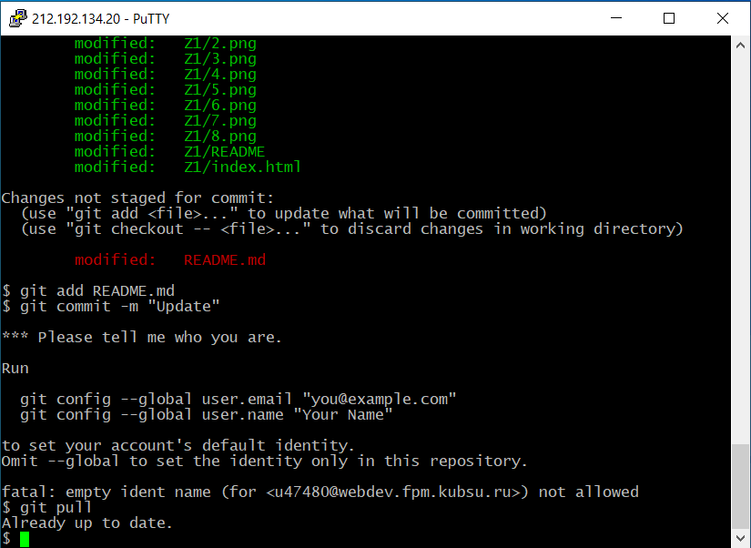
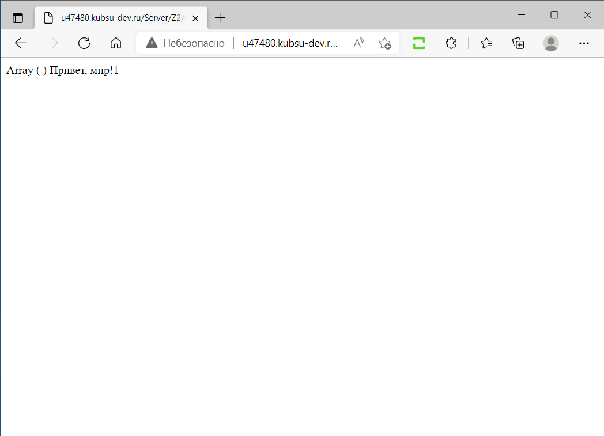
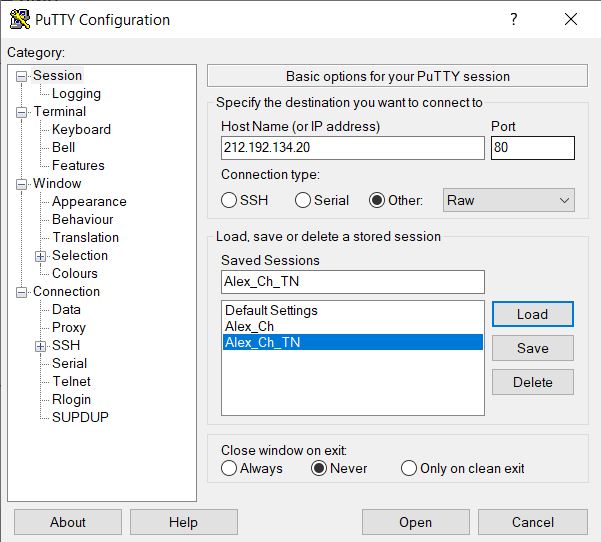
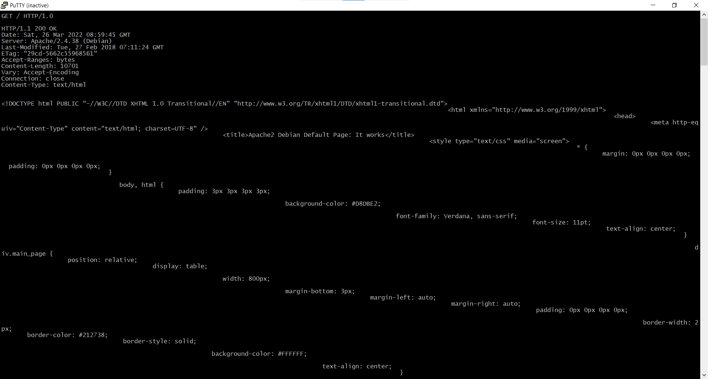

Файлы из предоставленного каталога files через GIT добавляем в репозиторий:



Заходим в PuTTY, подключаемся к серверу добавляем к файлам из прошлого задания.
Заливаем файлы из нашего репозитория на сервер:




Проверяем index.php:

Заходим в PuTTY, подключаемся к серверу (тип соединения Raw, порт 80):

Получаем главную страницу методом GET в протоколе HTTP 1.0:
